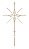
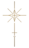

Photography
Visual places.
Different shadows.


Personal archive.
Curated garments, records
and selected objects.

Fragments / The personal archive
Visual places.
Different shadows.
Garments, records
and selected pieces.
Bands, albums.
Sounds that remain.
Selected curiosities.
A darker life.
La Likbør / Fragments
A personal archive of garments, photographs, music and objects that remain.
Visual debug moderate · 31 existing crops / diagnostic colors and IDs.
31 recortes atuais. Vermelho: bordas; azul: invasões; cinza: logo. Abra a tabela para ver origem, tamanho e posição.
Opacidade: 85%. Alpha dos pixels: ganho 4×. Blend: normal. Máscara dos recortes: fade de 1 px em cada extremidade.
·
E/D = PNG esquerdo/direito. Origem em pixels do arquivo; tamanho antes da rotação; posição = canto da caixa rotacionada no viewport.
*Limite = caixa cruza o container ou o viewport; não mede os grãos visíveis. As posições e o clipping original foram preservados.
| ID | Origem | Tamanho | x,y | Repete? | Limite* |
|---|